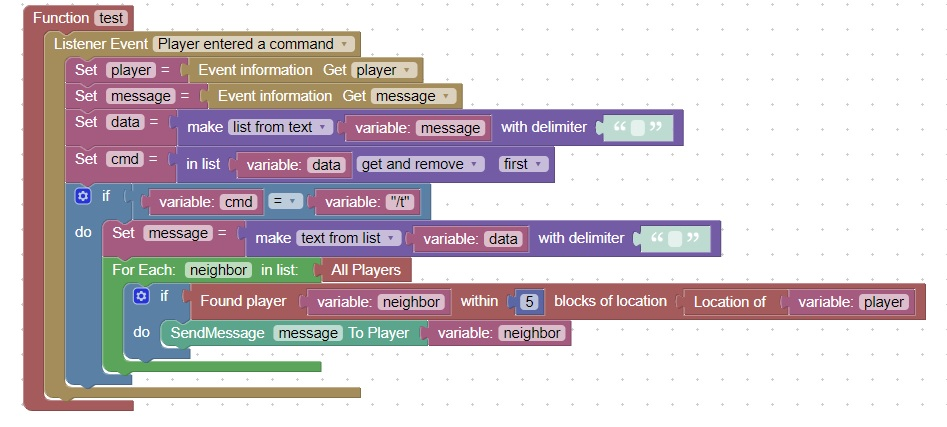

T Command
/t command is similar to the whisper command
When a user enters a command such as: /t Hello what is up?
You can use the list from text block with a space as delimeter
You end up with the list:
- /t
- Hello
- what
- is
- up?
Then you can use the get and remove block on the first element and your commmand becomes
/t
And the list becomes:
- Hello
- what
- is
- up?
You can then use text from list block to reform the message :
Hello what is up?
Check if the command is /t and you can send the message to the appropriate players within a certain block radius of your player
You can use this code as a reference:

As an additional homework item, add a special command /h which heals the player (sets their health to 20)
Hint: Use Set Health which is found in Entities, Player